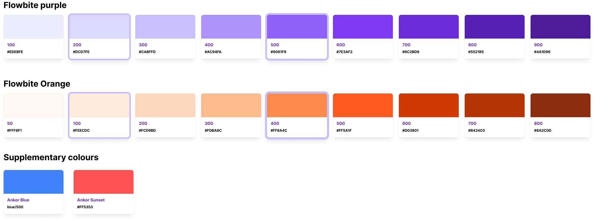

PART ONE
Project Overview
PROJECT OVERVIEW
The Opportunity
Ankor was in a sea of blue at the boat shows so we wanted to stand out. The branding exercise was aimed at creating a unique and memorable brand identity that would help Ankor differentiate itself from competitors and establish a strong presence in the market.
The Solution
The solution was to create a bold and vibrant brand identity that would capture the attention of potential customers and convey the company's values and mission. The new branding included a fresh color palette, typography, and visual elements that were designed to be modern, dynamic, and memorable. The branding was applied across all touchpoints, including the website, marketing materials, and product packaging, to create a cohesive and consistent brand experience.
Ankor Software
Role: Project Lead
Key Responsibilities:
- Lead the charge to uncover unmet branding issues
- Organised and refined process for brand exploration and brainstorming
- Created mood boards and style tiles to explore different visual directions
- Developed logo concepts and variations
- Designed brand guidelines and templates for consistent application across all touchpoints
- Collaborated with marketing and product teams to ensure brand consistency
- Presented branding concepts and strategies to stakeholders for feedback and approval
PROJECT OVERVIEW
Brand Identity
Our brand identity allows us to tell engaging stories to our different audiences.
It's how we look and act. The simplest way to describe it is a dialectic between
lo-fi and hi-fi, or today and tomorrow. It intertwines the final built outcome with
our process and culture.
It demonstrates our ability to get things done, while also celebrating our inquisitive side;
the side that's constantly innovating.
Ankors Values
01 Bold Innovation: Challenge the norm to create solutions that transform industries.
02 Relentless Excellence: Aim to exceed expectations and set the highest standards.
03 Youthful Energy and Dynamism: Stay fresh, vibrant, and fueled by enthusiasm.
04 Technology-Driven Impact: Use technology to create meaningful solutions and solve critical challenges.
05 Disruption with Purpose: Replace outdated systems with better, more equitable solutions.
STYLE GUIDE
Colours
Colours play a key role in our overall brand strategy. As the brand identity is bold and disruptive, we have purposefully chosen colours that represent that. Contrary to the traditional blues, greens and other “Maritime colour” palettes, our use of Purple and Orange intentionally cuts through the masses and differentiates us from the wider cohort that is in our industry.
